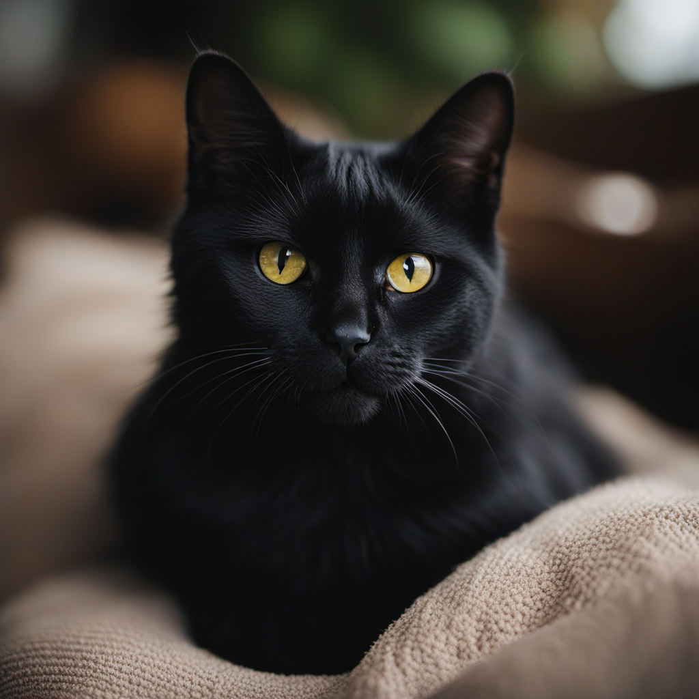
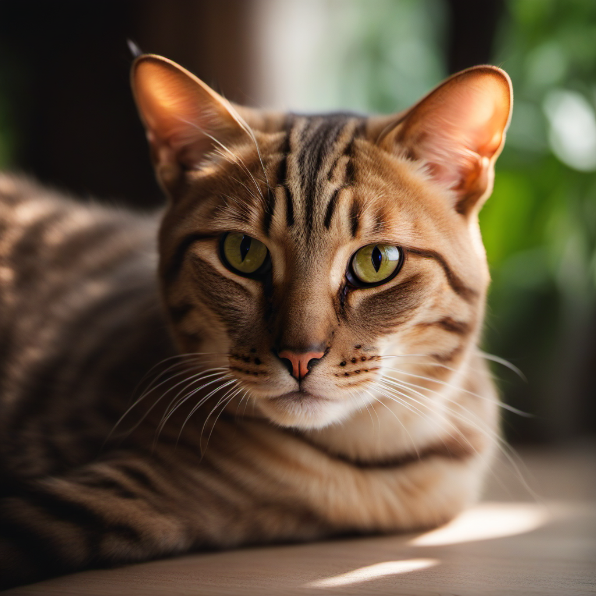

The Cat's Meow - FAQ

Q: Are cats actually present in the coffee shop?
A: Yes, we have many friendly and sociable cats that love to interact with our customers. However, all our cats are kept in a separate area, so if you prefer not to interact with the cats, that's totally okay.
Q: I'm allergic to cats. Can I still come?
A: Absolutely! We have a separate section for our customers who are allergic to cats. We ensure this area is kept completely cat-free and clean.

Q: Can I bring my own cat?
A: We're sorry, but for the safety of our resident cats and due to health regulations, we can't allow customers to bring their own cats.

Q: What's the best time to visit?
A: Our cats are most active in the early morning and late afternoon, but feel free to visit us at any time. We're open from 8 AM to 10 PM.